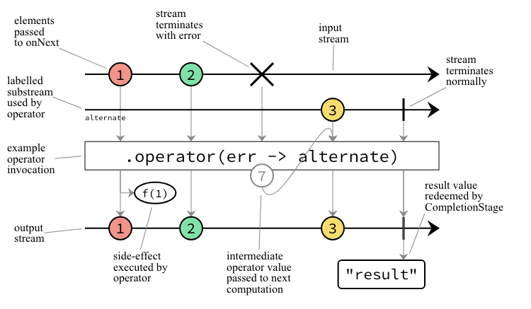
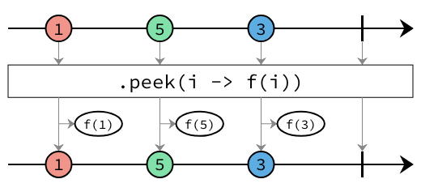
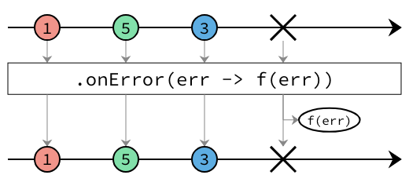
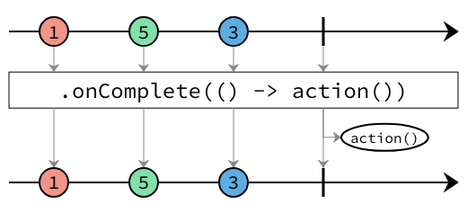

Interface PeekingOperators<T>
- Type Parameters:
T- The type of the elements that the stream emits.
- All Known Subinterfaces:
ProcessorBuilder<T,,R> PublisherBuilder<T>
public interface PeekingOperators<T>
Operations for peeking at elements and signals in the stream, without impacting the stream itself.
The documentation for each operator uses marble diagrams to visualize how the operator functions. Each element flowing in and out of the stream is represented as a coloured marble that has a value, with the operator applying some transformation or some side effect, termination and error signals potentially being passed, and for operators that subscribe to the stream, an output value being redeemed at the end.
Below is an example diagram labelling all the parts of the stream.

-
Method Summary
Modifier and TypeMethodDescriptiononComplete(Runnable action) Returns a stream containing all the elements from this stream, additionally performing the provided action when this stream completes.Returns a stream containing all the elements from this stream, additionally performing the provided action if this stream conveys an error.onTerminate(Runnable action) Returns a stream containing all the elements from this stream, additionally performing the provided action when this stream completes or failed.Returns a stream containing all the elements from this stream, additionally performing the provided action on each element.
-
Method Details
-
peek
Returns a stream containing all the elements from this stream, additionally performing the provided action on each element.
- Parameters:
consumer- The function called for every element.- Returns:
- A new stream builder that consumes elements of type
Tand emits the same elements. In between, the given function is called for each element.
-
onError
Returns a stream containing all the elements from this stream, additionally performing the provided action if this stream conveys an error. The given consumer is called with the failure.
- Parameters:
errorHandler- The function called with the failure.- Returns:
- A new stream builder that consumes elements of type
Tand emits the same elements. If the stream conveys a failure, the given error handler is called.
-
onTerminate
Returns a stream containing all the elements from this stream, additionally performing the provided action when this stream completes or failed. The given action does not know if the stream failed or completed. If you need to distinguish useonError(Consumer)andonComplete(Runnable). In addition, the action is called if the stream is cancelled downstream.
- Parameters:
action- The function called when the stream completes or failed.- Returns:
- A new stream builder that consumes elements of type
Tand emits the same elements. The given action is called when the stream completes or fails.
-
onComplete
Returns a stream containing all the elements from this stream, additionally performing the provided action when this stream completes.
- Parameters:
action- The function called when the stream completes.- Returns:
- A new stream builder that consumes elements of type
Tand emits the same elements. The given action is called when the stream completes.
-